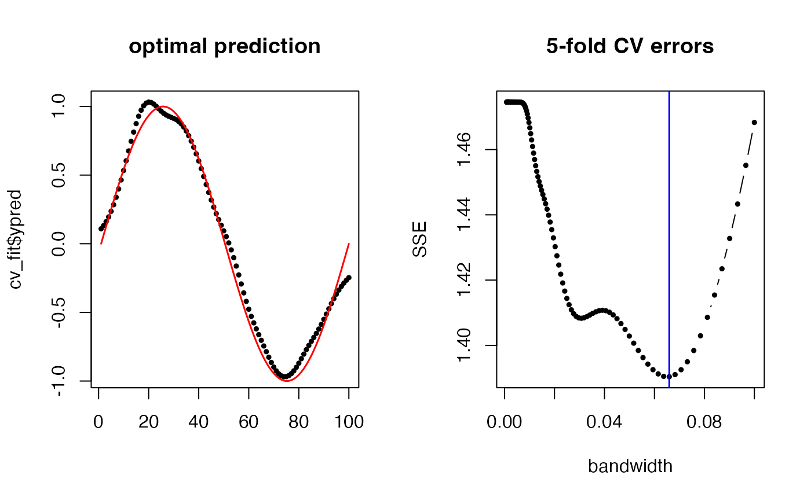

Manifold-to-Scalar Kernel Regression with K-Fold Cross Validation
Source:R/inference_m2skregCV.R
riem.m2skregCV.RdManifold-to-Scalar Kernel Regression with K-Fold Cross Validation
Arguments
- riemobj
a S3
"riemdata"class for \(N\) manifold-valued data corresponding to \(X_1,\ldots,X_N\).- y
a length-\(N\) vector of dependent variable values.
- bandwidths
a vector of nonnegative numbers that control smoothness.
- geometry
(case-insensitive) name of geometry; either geodesic (
"intrinsic") or embedded ("extrinsic") geometry.- kfold
the number of folds for cross validation.
Value
a named list of S3 class m2skreg containing
- ypred
a length-\(N\) vector of optimal smoothed responses.
- bandwidth
the optimal bandwidth value.
- inputs
a list containing both
riemobjandyfor future use.- errors
a matrix whose columns are
bandwidthsvalues and corresponding errors measure in SSE.
Examples
# \donttest{
#-------------------------------------------------------------------
# Example on Sphere S^2
#
# X : equi-spaced points from (0,0,1) to (0,1,0)
# y : sin(x) with perturbation
#-------------------------------------------------------------------
# GENERATE DATA
set.seed(496)
npts = 100
nlev = 0.25
thetas = seq(from=0, to=pi/2, length.out=npts)
Xstack = cbind(rep(0,npts), sin(thetas), cos(thetas))
Xriem = wrap.sphere(Xstack)
ytrue = sin(seq(from=0, to=2*pi, length.out=npts))
ynoise = ytrue + rnorm(npts, sd=nlev)
# FIT WITH 5-FOLD CV
cv_band = (10^seq(from=-4, to=-1, length.out=200))
cv_fit = riem.m2skregCV(Xriem, ynoise, bandwidths=cv_band)
cv_err = cv_fit$errors
# VISUALIZE
opar <- par(no.readonly=TRUE)
par(mfrow=c(1,2))
plot(1:npts, cv_fit$ypred, pch=19, cex=0.5, "b", xlab="", main="optimal prediction")
lines(1:npts, ytrue, col="red", lwd=1.5)
plot(cv_err[,1], cv_err[,2], "b", pch=19, cex=0.5, main="5-fold CV errors",
xlab="bandwidth", ylab="SSE")
abline(v=cv_fit$bandwidth, col="blue", lwd=1.5)

par(opar)
# }